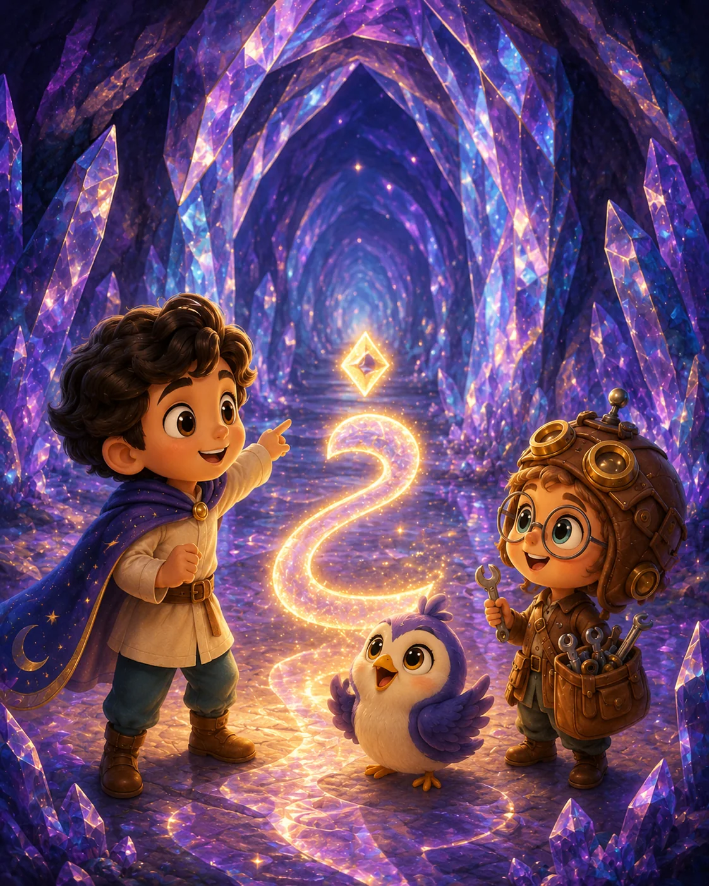
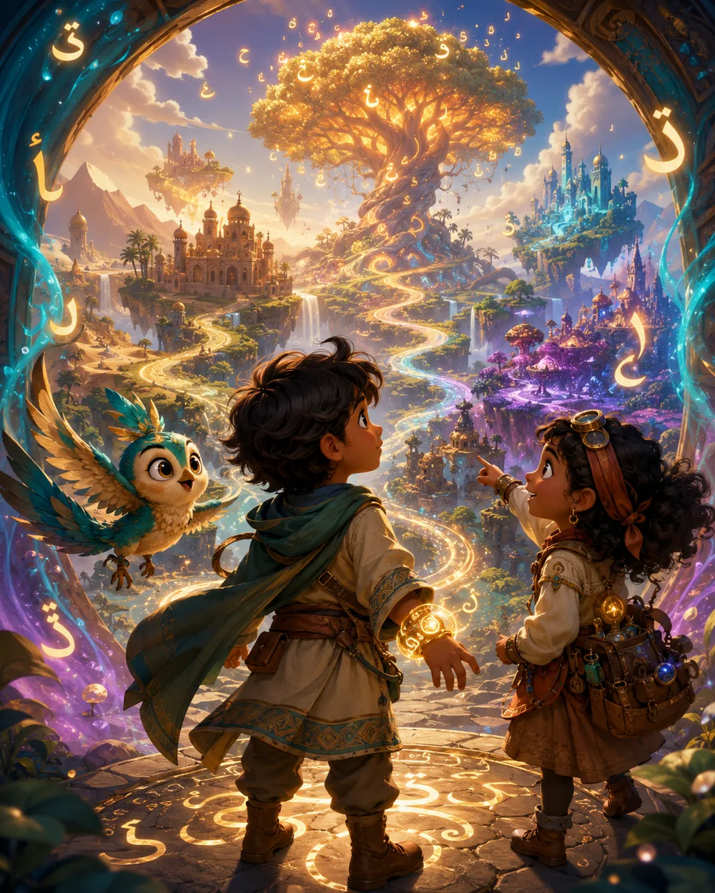
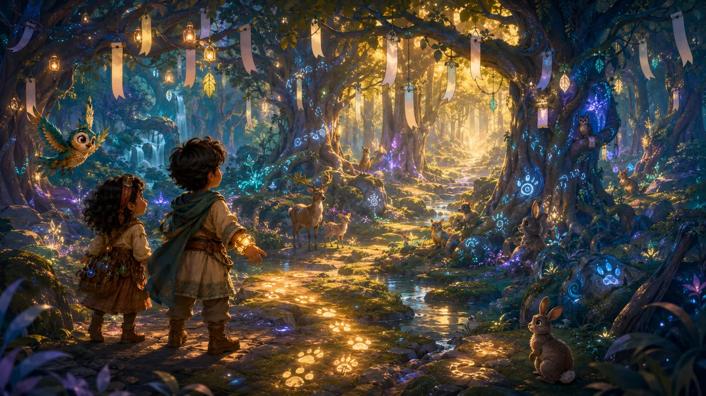
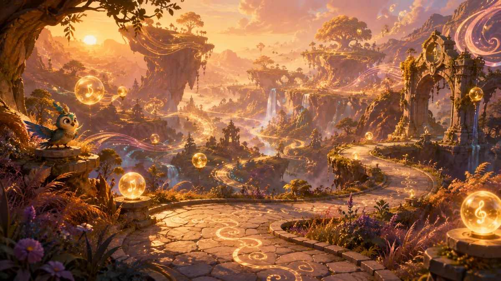
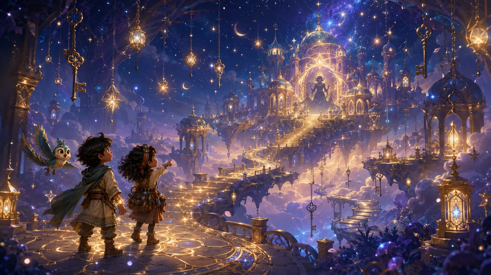

ثَبِّتْ عَالَمَ نُون
ليفتح مثل تطبيق ويعمل بصورة أفضل على الهاتف.

عَالَمُ نُون
فِي لَيْلَةٍ سَاحِرَةٍ، سَرَقَ ظِلُّ الصَّمْتِ خَمْسَةَ مَفَاتِيحَ مِنْ مَدِينَةِ الأَصْوَات. رَافِقْ صَدِيقَكَ نُون — سَتَجِدُهُ فِي أَسْفَلِ الشَّاشَةِ يُشَجِّعُكَ — وَأَعِدِ المَفَاتِيحَ مَحَطَّةً بَعْدَ مَحَطَّة.
اِسْمُ البَطَل
خُطَّةُ الرِّحْلَة
- المِفْتَاحُ الأَوَّل: سِرُّ المَخْبَزِ الذَّهَبِي.
- المِفْتَاحُ الثَّانِي: غَابَةُ البَالُونَات.
- المِفْتَاحُ الثَّالِث: جِسْرُ الإِيقَاع.
- المِفْتَاحُ الرَّابِع: كَهْفُ المِرْآةِ البِلَّوْرِيَّة.
- المِفْتَاحُ الخَامِس: قَصْرُ النُّجُوم.

2. غَابَةُ البَالُونَات
اِلْتَقِطْ بَالُونَاتِ صَوْتِ ب مَعَ لُولُو.
3. جِسْرُ الإِيقَاع
اِسْتَمِعْ ثُمَّ أَعِدِ الإِيقَاعَ لِيَعْبُرَ الأَصْدَاء.
4. كَهْفُ المِرْآةِ البِلَّوْرِيَّة
اُرْسُمْ خَيْطَ النُّورِ حَتَّى يَعُودَ الاِنْعِكَاس.